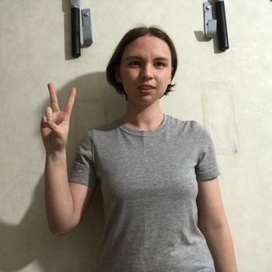
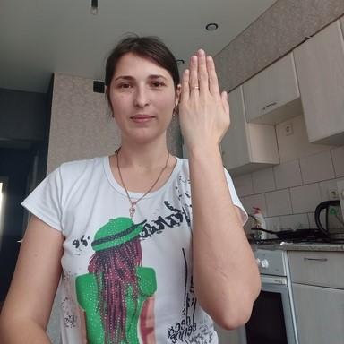
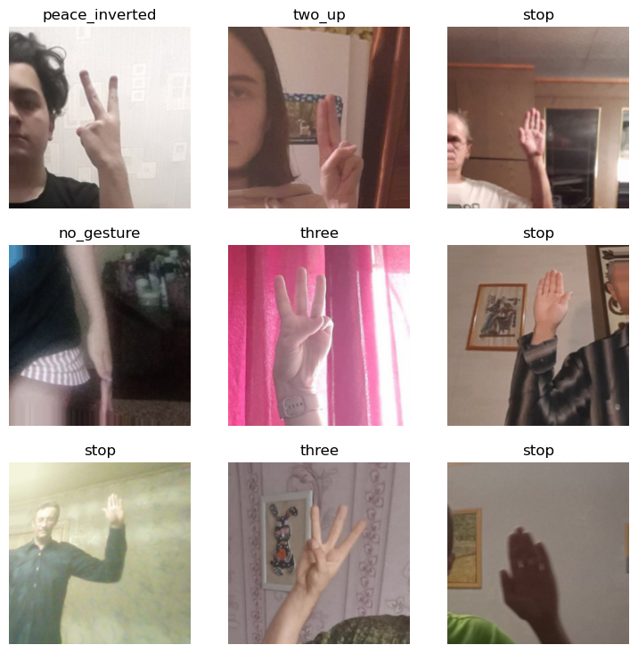
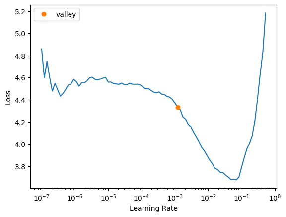
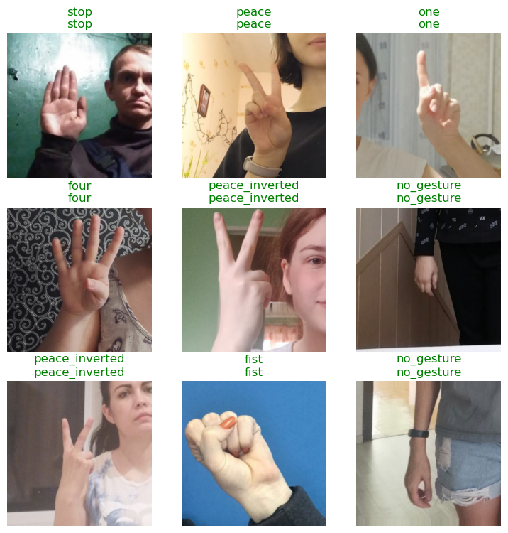
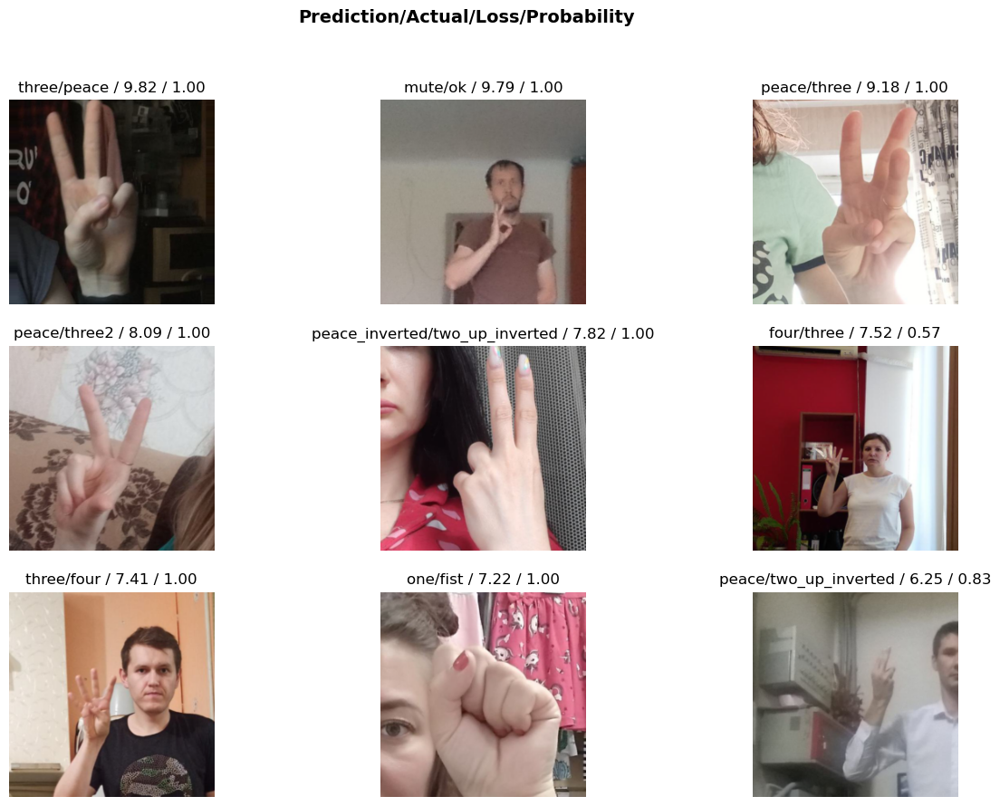

Using Fastai and TensorFlow.js for Hand Gesture Recognition in Unity Pt. 1
- Introduction
- Overview
- Install Dependencies
- Import Dependencies
- Select a Model
- Download the Dataset
- Inspect the Dataset
- Define DataLoaders
- Finetune the Model
- Clean Dataset (Optional)
- Test the Model
- Export the Model
- Export Inference Data
- Summary
Tutorial Links
- Part 1: Train a hand gesture classifier using fastai and export it to TensorFlow.js.
- Part 2: Create a TensorFlow.js plugin for the Unity game engine.
- Part 3: Build a Unity project as a WebGL application and host it using GitHub Pages.
- GitHub Repository
Introduction
In this three-part tutorial series, we will use fastai and TensorFlow.js to create an in-browser hand gesture recognition system in Unity. In Part 1, we will train a hand gesture classifier using fastai and export it to TensorFlow.js. In Part 2, we will create a TensorFlow.js plugin for the Unity game engine. Finally, in Part 3, we will host the Unity project as a live demo on GitHub Pages. By the end of this tutorial series, you will have a hand gesture recognition system that you can use in your Unity projects.
In-Browser Demo: Hand Gesture Classifier
The tutorial uses a downscaled version of HaGRID (HAnd Gesture Recognition Image Dataset) that I modified for image classification tasks. The dataset contains images for 18 distinct hand gestures and an additional no_gesture class to account for idle hands.
Reference Images
| Class | Image |
|---|---|
| call |

|
| dislike |

|
| fist |

|
| four |

|
| like |

|
| mute |

|
| ok | |
| one |

|
| palm |

|
| peace |  |
| peace_inverted |

|
| rock |

|
| stop |

|
| stop_inverted |  |
| three |

|
| three2 | |
| two_up |

|
| two_up_inverted |

|
We can use a model trained on this dataset to map hand gestures to user input via a webcam in Unity.
Overview
In Part 1 of this tutorial series, we finetune an image classifier from the timm library using fastai and export it to TensorFlow.js. We will start by installing and importing the necessary dependencies. Then, we will select a model to use and download a dataset to train it. After inspecting the dataset, we will define data loaders to use for training. Finally, we will finetune and export the model. We also demonstrate how to clean the dataset to improve training. By the end of this post, you will have a trained hand gesture classifier that you can use in web applications.
You can find links to view the training code and run it on Google Colab and Kaggle below.
| Jupyter Notebook | Colab | Kaggle |
|---|---|---|
| GitHub Repository | Open In Colab | Open in Kaggle |
Install Dependencies
The training code requires PyTorch for the fastai library, the fastai library itself for training, and the Kaggle API Python package for downloading the dataset. The timm library provides access to a wide range of pretrained image models.
Install model training dependencies
# %%capture
# !pip install -U torch torchvision torchaudio
# !pip install -U fastai==2.7.9
# !pip install -U kaggle
# !pip install -U Pillow
# !pip install -U timmThe model conversion process involves exporting the PyTorch model to ONNX, converting the ONNX model to a TensorFlow SavedModel, then converting the SavedModel to TensorFlow.js web format.
Install Tensorflow.js conversion dependencies
# %%capture
# !pip install -U onnxruntime
# !pip install onnx-tf
# !pip install tensorflowjs
# !pip install tensorflow_probability
# !pip install onnx-simplifier
# !pip install simple-onnx-processing-tools
# !pip install -U onnx_graphsurgeon --index-url https://pypi.ngc.nvidia.comImport Dependencies
Import all fastai computer vision functionality
from fastai.vision.all import *Import pandas and disable column and row limits
import pandas as pd
pd.set_option('max_colwidth', None)
pd.set_option('display.max_rows', None)
pd.set_option('display.max_columns', None)Import timm library
import timmtimm.__version__'0.6.7'Select a Model
Timm provides many pretrained models, but not all are fast enough for real-time applications. We can filter through the available models using the timm.list_models() function.
View available ResNet models
pd.DataFrame(timm.list_models('resnet*', pretrained=True))| 0 | |
|---|---|
| 0 | resnet10t |
| 1 | resnet14t |
| 2 | resnet18 |
| 3 | resnet18d |
| 4 | resnet26 |
| 5 | resnet26d |
| 6 | resnet26t |
| 7 | resnet32ts |
| 8 | resnet33ts |
| 9 | resnet34 |
| 10 | resnet34d |
| 11 | resnet50 |
| 12 | resnet50_gn |
| 13 | resnet50d |
| 14 | resnet51q |
| 15 | resnet61q |
| 16 | resnet101 |
| 17 | resnet101d |
| 18 | resnet152 |
| 19 | resnet152d |
| 20 | resnet200d |
| 21 | resnetaa50 |
| 22 | resnetblur50 |
| 23 | resnetrs50 |
| 24 | resnetrs101 |
| 25 | resnetrs152 |
| 26 | resnetrs200 |
| 27 | resnetrs270 |
| 28 | resnetrs350 |
| 29 | resnetrs420 |
| 30 | resnetv2_50 |
| 31 | resnetv2_50d_evos |
| 32 | resnetv2_50d_gn |
| 33 | resnetv2_50x1_bit_distilled |
| 34 | resnetv2_50x1_bitm |
| 35 | resnetv2_50x1_bitm_in21k |
| 36 | resnetv2_50x3_bitm |
| 37 | resnetv2_50x3_bitm_in21k |
| 38 | resnetv2_101 |
| 39 | resnetv2_101x1_bitm |
| 40 | resnetv2_101x1_bitm_in21k |
| 41 | resnetv2_101x3_bitm |
| 42 | resnetv2_101x3_bitm_in21k |
| 43 | resnetv2_152x2_bit_teacher |
| 44 | resnetv2_152x2_bit_teacher_384 |
| 45 | resnetv2_152x2_bitm |
| 46 | resnetv2_152x2_bitm_in21k |
| 47 | resnetv2_152x4_bitm |
| 48 | resnetv2_152x4_bitm_in21k |
The smaller ResNet models are both fast and sufficiently accurate in most settings. Unfortunately, the resnet10t and resnet14t models contain operations unsupported by the TensorFlow.js conversion script. We’ll instead use the resnet18 model for our lightweight option.
Inspect config for specific model
Each model comes with a set of default configuration parameters. We must keep track of the mean and std values used to normalize the model input. Many pretrained models use the ImageNet normalization stats, but others, like MobileViT, do not.
from timm.models import resnet
resnet_model = 'resnet18'
pd.DataFrame.from_dict(resnet.default_cfgs[resnet_model], orient='index')| 0 | |
|---|---|
| url | https://download.pytorch.org/models/resnet18-5c106cde.pth |
| num_classes | 1000 |
| input_size | (3, 224, 224) |
| pool_size | (7, 7) |
| crop_pct | 0.875 |
| interpolation | bilinear |
| mean | (0.485, 0.456, 0.406) |
| std | (0.229, 0.224, 0.225) |
| first_conv | conv1 |
| classifier | fc |
View available ConvNeXt models
pd.DataFrame(timm.list_models('convnext*', pretrained=True))| 0 | |
|---|---|
| 0 | convnext_base |
| 1 | convnext_base_384_in22ft1k |
| 2 | convnext_base_in22ft1k |
| 3 | convnext_base_in22k |
| 4 | convnext_large |
| 5 | convnext_large_384_in22ft1k |
| 6 | convnext_large_in22ft1k |
| 7 | convnext_large_in22k |
| 8 | convnext_nano |
| 9 | convnext_small |
| 10 | convnext_small_384_in22ft1k |
| 11 | convnext_small_in22ft1k |
| 12 | convnext_small_in22k |
| 13 | convnext_tiny |
| 14 | convnext_tiny_384_in22ft1k |
| 15 | convnext_tiny_hnf |
| 16 | convnext_tiny_in22ft1k |
| 17 | convnext_tiny_in22k |
| 18 | convnext_xlarge_384_in22ft1k |
| 19 | convnext_xlarge_in22ft1k |
| 20 | convnext_xlarge_in22k |
The convnext_nano model is highly accurate for its size and is a good choice when compute power is less constrained.
Inspect config for specific model
from timm.models import convnext
convnext_model = 'convnext_nano'
pd.DataFrame.from_dict(convnext.default_cfgs[convnext_model], orient='index')| 0 | |
|---|---|
| url | https://github.com/rwightman/pytorch-image-models/releases/download/v0.1-rsb-weights/convnext_nano_d1h-7eb4bdea.pth |
| num_classes | 1000 |
| input_size | (3, 224, 224) |
| pool_size | (7, 7) |
| crop_pct | 0.95 |
| interpolation | bicubic |
| mean | (0.485, 0.456, 0.406) |
| std | (0.229, 0.224, 0.225) |
| first_conv | stem.0 |
| classifier | head.fc |
| test_input_size | (3, 288, 288) |
| test_crop_pct | 1.0 |
Select a model
# model_type = resnet
# model_name = resnet_modelmodel_type = convnext
model_name = convnext_modelExtract normalization stats from model config
mean = model_type.default_cfgs[model_name]['mean']
std = model_type.default_cfgs[model_name]['std']
mean, std((0.485, 0.456, 0.406), (0.229, 0.224, 0.225))Download the Dataset
The Kaggle API tool requires an API Key for a Kaggle account. Sign in or create a Kaggle account using the link below, then click the Create New API Token button.
- Kaggle Account Settings: https://www.kaggle.com/me/account

Kaggle will generate and download a kaggle.json file containing your username and new API token. Initialize the creds variable with the values for each.
Enter Kaggle username and API token
creds = '{"username":"","key":""}'Save Kaggle credentials if none are present
cred_path = Path('~/.kaggle/kaggle.json').expanduser()
# Save API key to a json file if it does not already exist
if not cred_path.exists():
cred_path.parent.mkdir(exist_ok=True)
cred_path.write_text(creds)
cred_path.chmod(0o600)Import Kaggle API
from kaggle import apiSelect a dataset
Now that we have our Kaggle credentials set, we need to define the dataset and where to store it. I made three different-sized versions of the dataset available on Kaggle.
- HaGRID Classification 512p no_gesture 150k
- Images: 154,816
- Size: 4 GB
- HaGRID Classification 512p no_gesture 300k
- Images: 309,632
- Size: 8 GB
- HaGRID Classification 512p no_gesture
- Images: 619,264
- Size: 15 GB
dataset_name = 'hagrid-classification-512p-no-gesture-150k'
# dataset_name = 'hagrid-classification-512p-no-gesture-300k'
# dataset_name = 'hagrid-classification-512p-no-gesture'
kaggle_dataset = f'innominate817/{dataset_name}'Define path to dataset
We will use the default archive and data folders for the fastai library to store the compressed and uncompressed datasets.
archive_dir = URLs.path()
dataset_dir = archive_dir/'../data'
archive_path = Path(f'{archive_dir}/{dataset_name}.zip')
dataset_path = Path(f'{dataset_dir}/{dataset_name}')Define method to extract the dataset from an archive file
def file_extract(fname, dest=None):
"Extract `fname` to `dest` using `tarfile` or `zipfile`."
if dest is None: dest = Path(fname).parent
fname = str(fname)
if fname.endswith('gz'): tarfile.open(fname, 'r:gz').extractall(dest)
elif fname.endswith('zip'): zipfile.ZipFile(fname ).extractall(dest)
else: raise Exception(f'Unrecognized archive: {fname}')Download the dataset if it is not present
if not archive_path.exists():
api.dataset_download_cli(kaggle_dataset, path=archive_dir)
file_extract(fname=archive_path, dest=dataset_path)Inspect the Dataset
We can start inspecting the dataset once it finishes downloading.
Inspect the dataset path
pd.DataFrame(list(dataset_path.ls()))| 0 | |
|---|---|
| 0 | /home/innom-dt/.fastai/archive/../data/hagrid-classification-512p-no-gesture-150k/hagrid-classification-512p-no-gesture-150k |
Get image file paths
img_dir = dataset_path/dataset_namefiles = get_image_files(img_dir)
len(files)154816Inspect files
The dataset indicates the image class in the parent folder names.
pd.DataFrame([files[0], files[-1]])| 0 | |
|---|---|
| 0 | /home/innom-dt/.fastai/archive/../data/hagrid-classification-512p-no-gesture-150k/hagrid-classification-512p-no-gesture-150k/stop/3ac51cf4-cd81-4803-a608-76a55b36df26.jpeg |
| 1 | /home/innom-dt/.fastai/archive/../data/hagrid-classification-512p-no-gesture-150k/hagrid-classification-512p-no-gesture-150k/two_up/d5a0a30d-92aa-4a7c-9621-1fed0e8f0b66.jpeg |
Inspect class folder names
There are 19 class folders, and the dataset does not predefine a training-validation split.
folder_names = [path.name for path in Path(img_dir).ls()]
if 'models' in folder_names:
os.removedirs(img_dir/'models')
folder_names.remove('models')
folder_names.sort()
print(f"Num classes: {len(folder_names)}")
pd.DataFrame(folder_names)Num classes: 19| 0 | |
|---|---|
| 0 | call |
| 1 | dislike |
| 2 | fist |
| 3 | four |
| 4 | like |
| 5 | mute |
| 6 | no_gesture |
| 7 | ok |
| 8 | one |
| 9 | palm |
| 10 | peace |
| 11 | peace_inverted |
| 12 | rock |
| 13 | stop |
| 14 | stop_inverted |
| 15 | three |
| 16 | three2 |
| 17 | two_up |
| 18 | two_up_inverted |
Inspect one of the training images
import PIL
img = PIL.Image.open(files[0])
print(f"Class: {files[0].parent.name}")
print(f"Image Dims: {img.shape}")
img Class: stop
Image Dims: (512, 512)Define DataLoaders
Next, we need to define the Transforms for the DataLoaders object.
Define target input dimensions
The Unity project will take input from a webcam, which will likely not have a square aspect ratio. We can still train the models with a square aspect ratio, and training at 256x256 (65,536 pixels) is more efficient than training at 384x216 (82,944 pixels) for a 16:9 aspect ratio.
The ResNet and ConvNeXt models handle arbitrary input dimensions well. However, we must export some models like MobileViT with the exact input dimensions used for inference.
size_1_1 = (256, 256)
size_16_9 = (216, 384)
size = size_1_1Define Transforms
We can leave most of the options in aug_transforms at their default values. The HaGRID dataset is diverse enough that we don’t need to add too much augmentation. However, we will disable the max_rotate option as orientation is relevant for gesture recognition.
item_tfms = [Resize(size, method=ResizeMethod.Pad, pad_mode=PadMode.Border)]
batch_tfms = [
*aug_transforms(
size=size,
mult=1.0,
do_flip=True,
flip_vert=False,
max_rotate=0.0,
min_zoom=1.0,
max_zoom=1.1,
max_lighting=0.2,
max_warp=0.2,
p_affine=0.75,
pad_mode=PadMode.Border)
]Note: The fastai library automatically normalizes input for timm models as of version 2.7.5.
Define batch size
bs = 32Define DataLoaders object
We can use the from_folder method to instantiate the DataLoaders object.
dls = ImageDataLoaders.from_folder(
path=img_dir,
valid_pct=0.2,
bs=bs,
item_tfms=item_tfms,
batch_tfms=batch_tfms
)Verify DataLoaders object
Let’s verify the DataLoaders object works as expected before training a model.
dls.train.show_batch()
Finetune the Model
Now we can define the Learner object and finetune the selected model.
Define metrics
metrics = [error_rate, accuracy]Define Learner object
learn = vision_learner(dls, model_name, metrics=metrics)Define model checkpoint file path
checkpoint_path = Path(f"{dataset_path.name}-{model_name}.pth")
checkpoint_pathPath('hagrid-classification-512p-no-gesture-150k-convnext_nano.pth')Load existing checkpoint (Optional)
# if checkpoint_path.exists():
# print("Loading checkpoint...")
# checkpoint = torch.load(checkpoint_path)
# learn.model.load_state_dict(checkpoint)Find learning rate
suggested_lrs = learn.lr_find()
Define learning rate
We can use a slightly higher learning rate than the learning rate finder recommends to speed up training.
lr = suggested_lrs.valley*3
lr0.003606793354265392Define number of epochs
We should not need to train for more than a few epochs.
epochs = 4Define callbacks
Training with mixed precision can significantly reduce training time on modern GPUs. However, the older GPUs on the free tiers for Google Colab and Kaggle will likely not benefit from it.
cbs = [MixedPrecision()]Fine tune model
learn.fine_tune(epochs, base_lr=lr, cbs=cbs)| epoch | train_loss | valid_loss | error_rate | accuracy | time |
|---|---|---|---|---|---|
| 0 | 0.372442 | 0.189683 | 0.061299 | 0.938701 | 04:22 |
| epoch | train_loss | valid_loss | error_rate | accuracy | time |
|---|---|---|---|---|---|
| 0 | 0.096614 | 0.054749 | 0.017214 | 0.982786 | 05:29 |
| 1 | 0.048555 | 0.033598 | 0.010012 | 0.989988 | 05:34 |
| 2 | 0.030899 | 0.018264 | 0.005555 | 0.994445 | 05:32 |
| 3 | 0.018128 | 0.015447 | 0.004877 | 0.995123 | 05:30 |
Save model checkpoint
torch.save(learn.model.state_dict(), checkpoint_path)Make predictions for a group of images
learn.show_results()
Define an Interpretation object
Once the model finishes training, we can create an Interpretation object to see where it struggles. An Interpretation object is also helpful to see if there are any mislabeled/low-quality training images.
interp = Interpretation.from_learner(learn)Plot top losses
interp.plot_top_losses(k=9, figsize=(15,10))
Clean Dataset (Optional)
I spent some time cleaning the modified HaGRID datasets, but there are likely some training images that should still be moved or deleted. If the model accuracy is insufficient, consider using the ImageClassifierCleaner widget to edit the dataset.
Import fastai ImageClassifierCleaner
# from fastai.vision.widgets import ImageClassifierCleanerMark images to delete or move
# cleaner = ImageClassifierCleaner(learn)
# cleanerInspect samples to change
# cleaner.change()Move selected samples to target class folder
# for idx,cat in cleaner.change(): shutil.move(str(cleaner.fns[idx]), img_dir/cat)Inspect samples to delete
# cleaner.delete()Delete selected samples
# for idx in cleaner.delete(): cleaner.fns[idx].unlink()Note: Restart the notebook and finetune the trained model after cleaning the dataset.
Test the Model
Next, we will test the model on a single image.
Select a test image
import PILtest_file = files[0]
test_file.parent.name, test_file.name('stop', '3ac51cf4-cd81-4803-a608-76a55b36df26.jpeg')test_img = PIL.Image.open(test_file)
print(f"Source image size: {test_img.size}")
test_imgSource image size: (512, 512)Set target size
We will test the model with the target inference resolution to verify it performs as desired.
size = size_16_9
size(216, 384)Option 1: Pad to target input dims
padded_img = PIL.ImageOps.pad(test_img, [size[1], size[0]], method=PIL.Image.Resampling.BICUBIC)
print(f"Padded image size: {padded_img.size}")
padded_imgPadded image size: (384, 216)Option 2: Stretch to target input dims
stretched_img = test_img.resize([size[1], size[0]])
print(f"Stretched image size: {stretched_img.size}")
stretched_imgStretched image size: (384, 216)Make a prediction on padded image using a fastai.vision.core.PILImage
pred = learn.predict(PILImage(padded_img))
pred, pred[2].max() (('stop',
TensorBase(13),
TensorBase([5.6481e-08, 2.9167e-09, 1.7013e-08, 1.0619e-07, 7.0342e-09, 4.3362e-10,
1.9056e-08, 7.8481e-07, 1.9450e-08, 5.0064e-06, 3.8272e-09, 8.2519e-11,
4.3597e-08, 9.9999e-01, 2.3984e-08, 1.0935e-08, 2.4180e-09, 2.1497e-08,
5.9654e-10])),
TensorBase(1.0000))Make a prediction on stretched image using a fastai.vision.core.PILImage
pred = learn.predict(PILImage(stretched_img))
pred, pred[2].max()(('stop',
TensorBase(13),
TensorBase([1.3940e-06, 4.6373e-07, 1.3970e-04, 6.4621e-07, 6.8510e-08, 9.9468e-09,
1.1748e-07, 1.3881e-06, 1.1672e-06, 3.1076e-04, 9.0491e-09, 7.7261e-10,
8.4245e-08, 9.9954e-01, 1.7898e-07, 2.6569e-08, 3.4712e-08, 2.2750e-08,
6.5716e-09])),
TensorBase(0.9995))When we are satisfied with the model, we can start preparing for implementing it in TensorFlow.js. We will need to apply some of the preprocessing and post-processing that fastai applies automatically.
Inspect the after_item pipeline
We do not need to worry about padding the input image as both the ResNet and ConvNeXt models handle arbitrary input dimensions.
learn.dls.after_itemPipeline: Resize -- {'size': (256, 256), 'method': 'pad', 'pad_mode': 'border', 'resamples': (<Resampling.BILINEAR: 2>, <Resampling.NEAREST: 0>), 'p': 1.0} -> ToTensorInspect the after_batch pipeline
The after_batch pipeline first scales the image color channel values from [0,255] to [0,1]. We will need to do the same for the TensorFlow.js plugin. We will also need to normalize the input image with the relevant normalization stats.
learn.dls.after_batchPipeline: IntToFloatTensor -- {'div': 255.0, 'div_mask': 1} -> Flip -- {'size': (256, 256), 'mode': 'bilinear', 'pad_mode': 'border', 'mode_mask': 'nearest', 'align_corners': True, 'p': 0.5} -> Brightness -- {'max_lighting': 0.2, 'p': 1.0, 'draw': None, 'batch': False} -> Normalize -- {'mean': tensor([[[[0.4850]],
[[0.4560]],
[[0.4060]]]], device='cuda:0'), 'std': tensor([[[[0.2290]],
[[0.2240]],
[[0.2250]]]], device='cuda:0'), 'axes': (0, 2, 3)}Convert image to tensor
We’ll first prepare the input image by converting it to a tensor, batching it, and moving it to the GPU.
img_tensor = tensor(padded_img).permute(2, 0, 1).float().unsqueeze(dim=0).cuda()
img_tensor.shape, img_tensor (torch.Size([1, 3, 216, 384]),
tensor([[[[0., 0., 0., ..., 0., 0., 0.],
[0., 0., 0., ..., 0., 0., 0.],
[0., 0., 0., ..., 0., 0., 0.],
...,
[0., 0., 0., ..., 0., 0., 0.],
[0., 0., 0., ..., 0., 0., 0.],
[0., 0., 0., ..., 0., 0., 0.]],
[[0., 0., 0., ..., 0., 0., 0.],
[0., 0., 0., ..., 0., 0., 0.],
[0., 0., 0., ..., 0., 0., 0.],
...,
[0., 0., 0., ..., 0., 0., 0.],
[0., 0., 0., ..., 0., 0., 0.],
[0., 0., 0., ..., 0., 0., 0.]],
[[0., 0., 0., ..., 0., 0., 0.],
[0., 0., 0., ..., 0., 0., 0.],
[0., 0., 0., ..., 0., 0., 0.],
...,
[0., 0., 0., ..., 0., 0., 0.],
[0., 0., 0., ..., 0., 0., 0.],
[0., 0., 0., ..., 0., 0., 0.]]]], device='cuda:0'))Scale tensor values
We’ll then scale the values from [0, 255] to [0, 1].
scaled_tensor = img_tensor / 255Next, we’ll prepare the normalization values.
Prepare mean values
mean_tensor = tensor(mean).view(1,1,-1).permute(2, 0, 1).unsqueeze(dim=0).cuda()
mean_tensor.shape, mean_tensor (torch.Size([1, 3, 1, 1]),
tensor([[[[0.4850]],
[[0.4560]],
[[0.4060]]]], device='cuda:0'))Prepare std_dev values
std_tensor = tensor(std).view(1,1,-1).permute(2, 0, 1).unsqueeze(dim=0).cuda()
std_tensor.shape, std_tensor (torch.Size([1, 3, 1, 1]),
tensor([[[[0.2290]],
[[0.2240]],
[[0.2250]]]], device='cuda:0'))We can integrate the normalization preprocessing step and the Softmax postprocessing function into the exported model by creating a custom forward method. This way, we don’t need to store the normalization stats for each model in a separate file.
Create a backup of the default model forward function
We first need to create a backup of the current forward method.
origin_forward = learn.model.forwardDefine custom forward function for exporting the model
The custom forward method will normalize the input tensor, feed it to the original forward method and pass the raw output through a Softmax function.
def forward_export(self, x):
# Normalize input
normalized_tensor = (x - mean_tensor) / std_tensor
# Get raw model output
preds = origin_forward(normalized_tensor)
# Apply SoftMax function
return torch.nn.functional.softmax(preds, dim=1)Note: This custom forward method might also be a suitable spot to resize input images for models like MobileViT with fixed input dimensions.
Add custom forward function to model
We then add the custom forward method to the model using monkey patching.
learn.model.forward_export = forward_export.__get__(learn.model)Test custom forward function
Now we can test the custom forward method to verify it returns the expected prediction.
with torch.no_grad():
preds = learn.model.forward_export(scaled_tensor)
preds.cpu().argmax(), preds.cpu() (TensorBase(13),
TensorBase([[1.8443e-08, 1.8163e-09, 1.3866e-08, 2.6368e-08, 1.0109e-09, 6.3904e-10,
2.6506e-09, 7.7717e-09, 3.7365e-10, 1.0260e-06, 9.1487e-11, 4.4600e-11,
4.3488e-10, 1.0000e+00, 1.8129e-08, 3.4815e-09, 3.7684e-10, 1.1454e-08,
1.1459e-10]]))Get the class labels
learn.dls.vocab ['call', 'dislike', 'fist', 'four', 'like', 'mute', 'no_gesture', 'ok', 'one', 'palm', 'peace', 'peace_inverted', 'rock', 'stop', 'stop_inverted', 'three', 'three2', 'two_up', 'two_up_inverted']Get the predicted class label
learn.dls.vocab[preds.cpu().argmax()] 'stop'Replace model forward function with custom function
Lastly, we need to replace the current forward method with the custom one before exporting the model to ONNX.
learn.model.forward = learn.model.forward_exportExport the Model
Now we can begin the process of converting the PyTorch model to TensorFlow.js.
Define ONNX opset version
opset = 15Define ONNX file name
onnx_file_name = f"{dataset_path.name}-{learn.arch}-opset{opset}.onnx"
print(onnx_file_name)hagrid-classification-512p-no-gesture-150k-convnext_nano-opset15.onnxExport trained model to ONNX
We will also unlock the input dimensions for the model to give ourselves more flexibility in Unity. This setting will not matter for models like MobileViT that require exact input dimensions.
torch.onnx.export(learn.model.cpu(),
batched_tensor,
onnx_file_name,
export_params=True,
opset_version=opset,
do_constant_folding=True,
input_names = ['input'],
output_names = ['output'],
dynamic_axes={'input': {2 : 'height', 3 : 'width'}}
)Import dependencies for TensorFlow.js conversion
import onnx
from scc4onnx import order_conversion
from onnxsim import simplify
from onnx_tf.backend import prepareLoad ONNX model
onnx_model = onnx.load(onnx_file_name)Inspect model input
Looking at the input layer for the ONNX model, we can see that it is channels-first. However, the channels-last format is more straightforward for preparing model input in JavaScript. We can switch the model input to channels-last format using the scc4onnx package.
onnx_model.graph.input[0]name: "input"
type {
tensor_type {
elem_type: 1
shape {
dim {
dim_value: 1
}
dim {
dim_value: 3
}
dim {
dim_param: "height"
}
dim {
dim_param: "width"
}
}
}
}Get input name
input_name = onnx_model.graph.input[0].name
input_name'input'Convert model input to channels-last format
onnx_model = order_conversion(
onnx_graph=onnx_model,
input_op_names_and_order_dims={f"{input_name}": [0,2,3,1]},
non_verbose=True
)Inspect updated model input
If we look at the input layer again, we can see it is now in channels-last format.
onnx_model.graph.input[0]name: "input"
type {
tensor_type {
elem_type: 1
shape {
dim {
dim_value: 1
}
dim {
dim_param: "height"
}
dim {
dim_param: "width"
}
dim {
dim_value: 3
}
}
}
}Simplify ONNX model
The ONNX models generated by PyTorch are not always the most concise. We can use the onnx-simplifier package to tidy up the exported model. This step is entirely optional.
onnx_model, check = simplify(onnx_model)
checkTruePrepare ONNX model for Tensorflow Backend
Next, we need to convert the ONNX model to an internal representation of the computational graph.
tf_rep = prepare(onnx_model)Define path for TensorFlow saved model directory
tf_model_dir = f"./{onnx_file_name.split('.')[0]}"
tf_model_dir'./hagrid-classification-512p-no-gesture-150k-convnext_nano-opset15'We can now export the internal representation to a Tensorflow proto file.
Export backend representation to a Tensorflow proto file
tf_rep.export_graph(tf_model_dir)Define directory path to store tfjs model files
tfjs_model_dir = f"{tf_model_dir}-tfjs-uint8"
tfjs_model_dir'./hagrid-classification-512p-no-gesture-150k-convnext_nano-opset15-tfjs-uint8'Define arguments for tfjs converter script
The TensorFlow.js conversion script provides a few quantization options. These can significantly reduce the model file size. The file size matters since users download the models when loading the web demo. However, using the quantization options on small models like MobileNet can hurt accuracy.
from IPython.display import Markdown, displaytfjs_convert_command = f"""tensorflowjs_converter
--input_format=tf_saved_model
--output_format=tfjs_graph_model
--signature_name=serving_default
--saved_model_tags=serve
"{tf_model_dir}"
"{tfjs_model_dir}"
"--quantize_uint8"
"""
tfjs_convert_command = " ".join(tfjs_convert_command.split())
display(Markdown(f"```bash\n{tfjs_convert_command}\n```"))tensorflowjs_converter --input_format=tf_saved_model --output_format=tfjs_graph_model --signature_name=serving_default --saved_model_tags=serve "./hagrid-classification-512p-no-gesture-150k-convnext_nano-opset15" "./hagrid-classification-512p-no-gesture-150k-convnext_nano-opset15-tfjs-uint8" "--quantize_uint8"Export SavedModel to TFJS format
The conversion script will create a new folder containing a model.json file describing the model architecture and some BIN files storing the model weights.
print("Exporting TensorFlow SavedModel to TensorFlow.js Graph model...")
conversion_result = %sx $tfjs_convert_command
print("\n".join(conversion_result))Export Inference Data
We can export the list of class labels to a JSON file and import it into the Unity project. That way, we don’t have to hardcode them, and we can easily swap in models trained on different datasets.
import jsonExport class labels
labels = list(learn.dls.vocab)
labels['call',
'dislike',
'fist',
'four',
'like',
'mute',
'no_gesture',
'ok',
'one',
'palm',
'peace',
'peace_inverted',
'rock',
'stop',
'stop_inverted',
'three',
'three2',
'two_up',
'two_up_inverted']class_labels = {"classes": labels}
class_labels_file_name = f"{dataset_path.name}-classes.json"
with open(class_labels_file_name, "w") as write_file:
json.dump(class_labels, write_file)Summary
In this post, we finetuned an image classifier from the timm library using fastai and exported it to TensorFlow.js. We started by installing and importing the necessary dependencies, then selected a model to use and downloaded a dataset to train it. After inspecting the dataset, we defined data loaders to use for training. Finally, we finetuned and exported the model. We also demonstrated how to clean the dataset to improve training. With this completed, we are ready to move on to Part 2 of this tutorial series, where we will create a TensorFlow.js plugin for the Unity game engine.
Next: In-Browser Hand Gesture Recognition for Unity with Fastai and TensorFlow.js Pt. 2
Project Resources: GitHub Repository
I’m Christian Mills, a deep learning consultant specializing in practical AI implementations. I help clients leverage cutting-edge AI technologies to solve real-world problems.
Interested in working together? Fill out my Quick AI Project Assessment form or learn more about me.